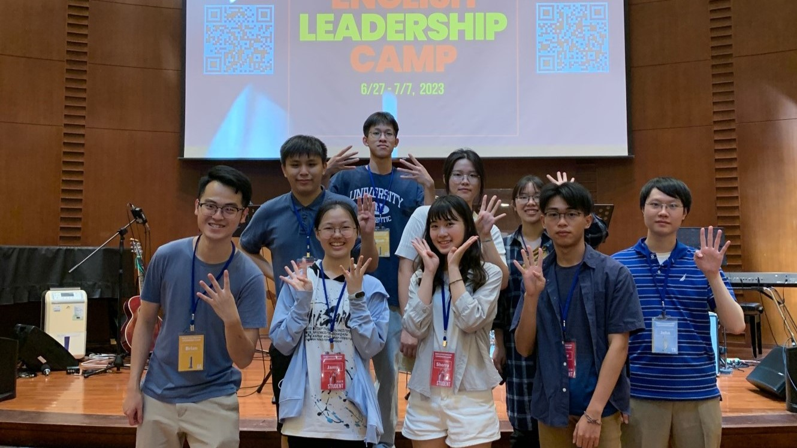

2004.07.12
NewTaipeiCity|Zhong Hé
Imformation_Management
人家是笑起來很好看
我是看起來很好笑🥲
About

- 我愛泥💓
- #引起皮皮注意的女人 #老 #嘲笑 #不正經 #叛逆girl


Skills
Programming Skills
Personal Skills
Python
Java
Hypertext Markup Language
Cascading Style Sheets
創意
80%
文書處理
75%
笑話
85%
Zelda
60%
Experiences
- Activities
「伊」起動手，沉「甸」心靈

🛵🛵環島
南部的太陽真的沒在開玩笑， 但還是很好玩! 右邊那個是環島路線的影片➡️
英語領袖營⛺
全大運志工👷

- Work Experiences
Pizza Hut🍕
June 2022 - Augest 2022
(必勝客的麵團都是毎天早上6點現揉的!!)
(所以要心懷感恩的吃😋)
Kindfood🥦
Septemper 2022 - Present
(其實還蠻好吃的)
(雖然有點貴🪙)
試務人員✏️
Septemper 2023 - Present
(雖然要很早起而且還要東奔西走搬東西很累)
(但是蠻好玩的，遇到很多好玩的人🫨)